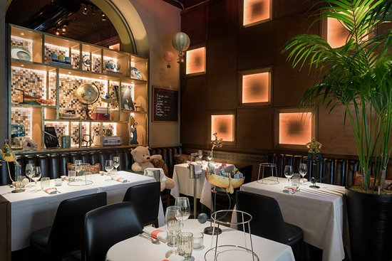
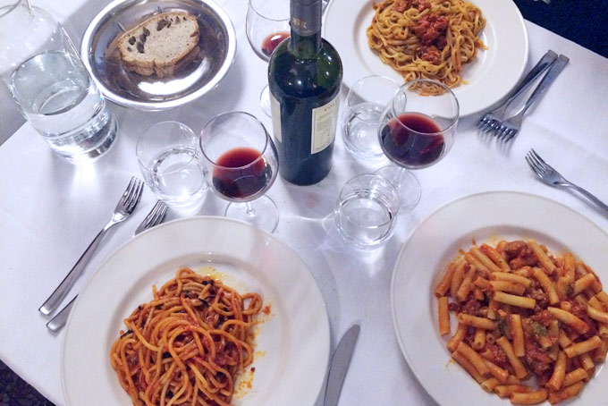
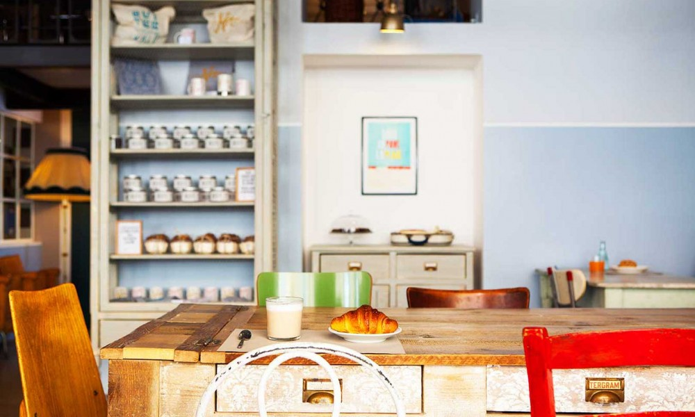

| Langosteria | ||
|---|---|---|
|  | Langosteria offers perhaps the city’s best fish and crustaceans in an upscale dining environment. But don’t expect stuffy formality here: the charming sea-inspired decorations give Langosteria a warmth not often found in high-end seafood restaurants. Try the Catalan-style main courses, out of which the Catalan-style king crab gets top marks. If you prefer your seafood raw, take your pick from the impressive oyster collection or order one of the raw-fish platters featuring delicacies like red shrimp fished from the deep Mediterranean waters off Sicily. | Price: $$$ |
| Dongio | ||
|  | This old fashioned trattoria in Porta Romana serves Calabrian dishes to a perennially packed dining room full of locals. The kitchen specialises in southern home cooking, like the restaurant’s signature dish, spaghettoni alla tamarro, fresh pasta with tomato sauce and n’duja sausage, a spicy spreadable sausage paste made of pig shoulder and belly, as well as organ meat. If you’re vegetarian, order the parmigiana di melanzane, the Italian precursor to the popular Italian-American dish eggplant Parmesan – it’s a gooey reminder that the original is almost always better. | Price: $$ |
| Pave | ||
|  | At Pavé you don’t gulp down your cappuccino and you don’t finish the last bite of your brioche as you head for the office. At Pavé you come to linger on the velvety foam of one of the best cappuccinos in the city and to dreamily pause in front of the baked goods: cream brioches, chocolate dumplings, fruit tarts. At Pave you can have a snack with bread, butter and marmalade and you enjoy an aperitif sipping Negroni and sinking your teeth in savory brioches and D.O.P. cheeses | Price:$ |